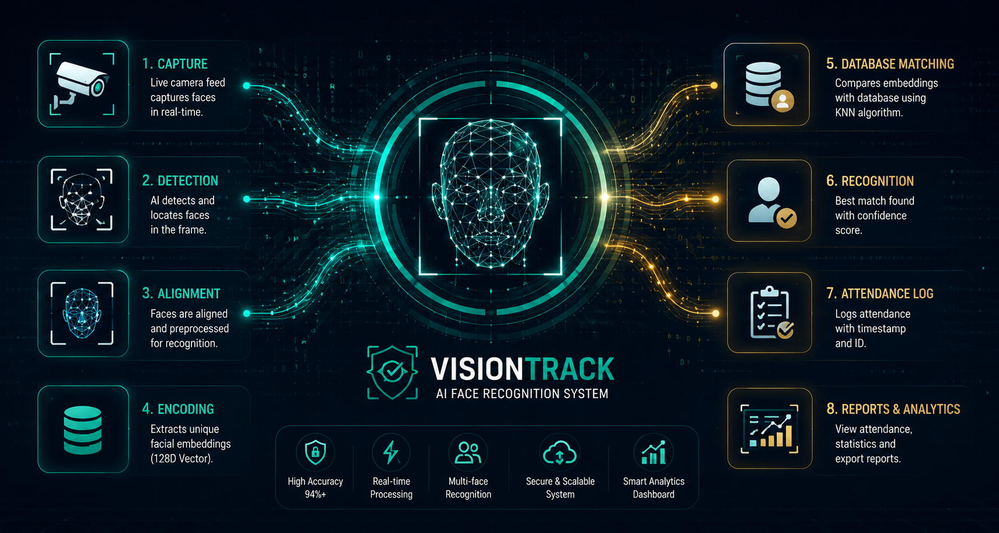

FEATURED PROJECTS
ResearchMind – Autonomous Multi-Agent AI Research Platform
AI-Powered Research Assistant with Autonomous Agent Collaboration
ResearchMind is an AI-powered Autonomous Multi-Agent Research Platform that automates the complete research lifecycle using specialized AI agents. The system performs intelligent web search, extracts relevant information, generates structured research reports, evaluates report quality, and delivers downloadable results through an intuitive Streamlit interface, significantly reducing manual research effort and improving productivity.
Multi-Agent AI Research System
Intelligent AI Research Assistant with Multi-Agent RAG Architecture
An advanced AI-powered research platform that processes PDFs, audio recordings, and YouTube videos using a Multi-Agent architecture. The system performs intelligent document retrieval, semantic search, transcription, summarization, and context-aware question answering through Retrieval-Augmented Generation (RAG), enabling users to interact with knowledge using natural language.

VisionTrack – AI-Powered Face Recognition Attendance Platform
Intelligent Face Recognition Attendance & Employee Management Platform
VisionTrack is an AI-powered attendance management platform that leverages Computer Vision and Machine Learning to automate employee attendance using real-time face recognition. The system provides secure self-registration, role-based dashboards, attendance analytics, absentee monitoring, and intelligent employee management through a modern Streamlit interface.

SalesForge AI
Intelligent Sales Forecasting & Business Analytics Platform
SalesForge AI is a modern AI-powered business intelligence platform developed to analyze historical sales data, forecast future revenue, visualize business performance, and deliver actionable insights through interactive dashboards. The platform leverages Machine Learning and Time-Series Forecasting to help businesses make accurate, data-driven decisions.